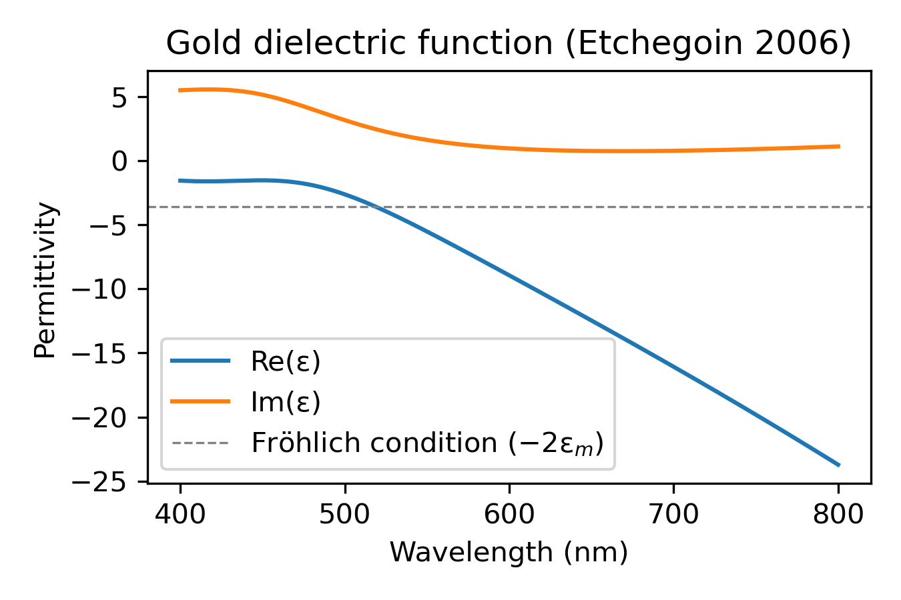
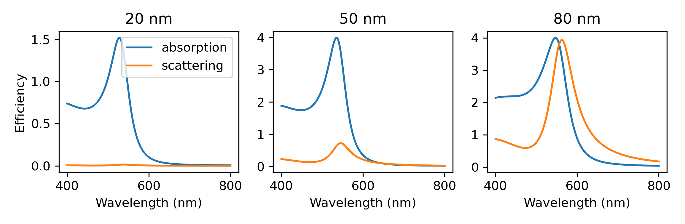
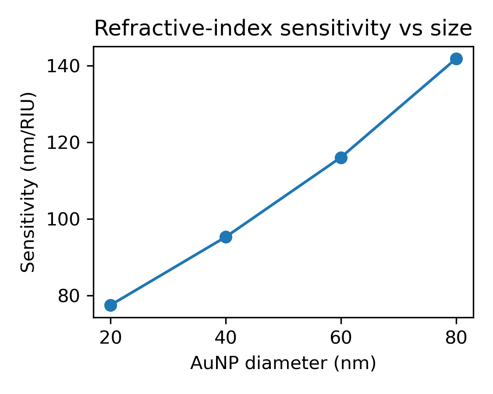
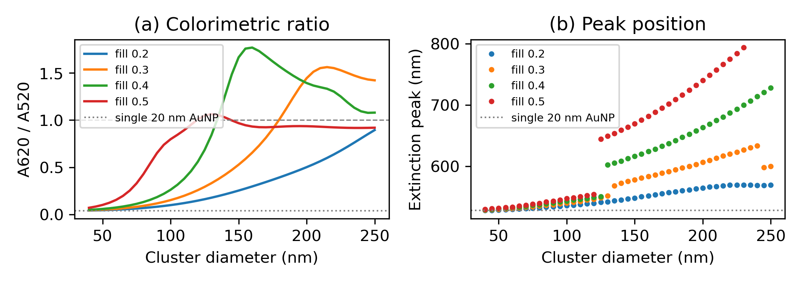
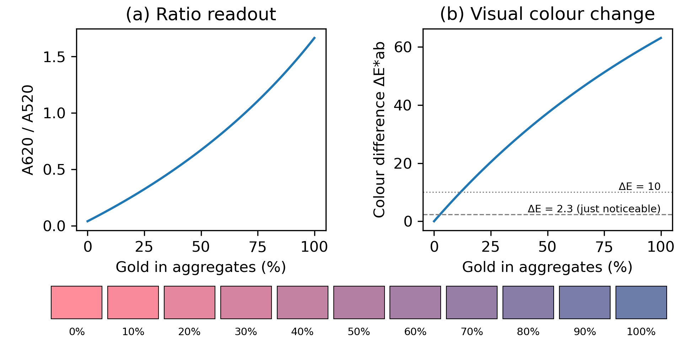

NanoSense: Computational Design of a Gold-Nanoparticle Plasmonic Colorimetric Biosensor for Point-of-Care Diagnostics
A PROJECT REPORT
Submitted by
SHREEJAN V (RA2311070010025)
Department of Biotechnology
Under the Guidance of
Dr. KARTHIKA P C
Assistant Professor
Department of Physics and Nanotechnology
In partial fulfilment of the requirements for the Degree of
BACHELOR OF TECHNOLOGY
In
BIOTECHNOLOGY

DEPARTMENT OF BIOTECHNOLOGY
COLLEGE OF ENGINEERING AND TECHNOLOGY
SRM INSTITUTE OF SCIENCE AND TECHNOLOGY
KATTANKULATHUR – 603 203
OCTOBER 2026
Department of Biotechnology
SRM Institute of Science & Technology
| Degree / Course | B. Tech Biotechnology |
| Student Name | Shreejan V |
| Registration Number | RA2311070010025 |
| Title of Work | NanoSense: Computational Design of a Gold-Nanoparticle Plasmonic Colorimetric Biosensor for Point-of-Care Diagnostics |
I hereby certify that this assessment complies with the University's Rules and Regulations relating to Academic misconduct and plagiarism, as listed in the University Website, Regulations, and the Education Committee guidelines.
I confirm that all the work contained in this assessment is my own except where indicated, and that I have met the following conditions:
- Clearly referenced / listed all sources as appropriate
- Referenced and put in inverted commas all quoted text (from books, web, etc.)
- Given the sources of all pictures, data etc. that are not my own
- Not made any use of the report(s) or essay(s) of any other student(s) either past or present
- Acknowledged in appropriate places any help that I have received from others (e.g. fellow students, technicians, statisticians, external sources, AI tools)
- Complied with any other plagiarism criteria specified in the Course handbook / University website
I understand that any false claim for this work will be penalised in accordance with the University policies and regulations.
DECLARATION: I am aware of and understand the University's policy on Academic misconduct and plagiarism and I certify that this assessment is my own work, except where indicated by referring, and that I have followed the good academic practices noted above.
SRM INSTITUTE OF SCIENCE AND TECHNOLOGY
KATTANKULATHUR – 603 203
BONAFIDE CERTIFICATE
Certified that 21NT0404T – Nanotechnology in Societal Development mini-project report titled "NanoSense: Computational Design of a Gold-Nanoparticle Plasmonic Colorimetric Biosensor for Point-of-Care Diagnostics" is the Bonafide work of "Shreejan V [RA2311070010025]" who carried out the mini-project work under my supervision. Certified further, that to the best of my knowledge the work reported herein does not form any other project report or dissertation on the basis of which a degree or award was conferred on an earlier occasion on this or any other candidate.
Dr. Karthika P C
Assistant Professor
Department of Physics and Nanotechnology
SRM Institute of Science and Technology
Kattankulathur
Acknowledgment
I sincerely thank my faculty, Dr. Karthika P C, Department of Physics and Nanotechnology, SRM Institute of Science and Technology, for her guidance and constructive feedback throughout this project. Her teaching of nanoscale phenomena, nano-biosensing and the societal dimensions of nanotechnology gave this work its foundation.
I thank the faculty of the Department of Biotechnology for their encouragement, and my classmates for useful discussions. I acknowledge the open-source scientific Python community (NumPy, SciPy, Matplotlib), whose tools made this simulation possible. AI-assisted tools were used for code drafting and language editing; all results were generated by running the code and checked by me.
Finally, I thank my family for their constant support and motivation.
ABSTRACT
Rapid, low-cost diagnostics are essential for healthcare in resource-limited settings, yet laboratory techniques such as ELISA and PCR need trained staff, instruments and time. Gold nanoparticles (AuNPs) offer an alternative: their localized surface plasmon resonance (LSPR) gives an intense red colour that shifts when biomolecules bind or when particles aggregate, so a result can be read by eye or with a smartphone camera. This project, NanoSense, computationally designs such a sensor. Optical properties of AuNPs in water were simulated using full Mie theory with an analytical Drude–critical-point dielectric model for gold. Four core studies were performed: (i) size dependence of the plasmon band, (ii) red-shift due to a protein binding layer using a core–shell model, (iii) bulk refractive-index sensitivity, and (iv) aggregation-induced colour change using Maxwell-Garnett effective-medium clusters. These were followed by validation and extended studies: the dielectric model, absorption versus scattering, sensitivity versus size, a quasi-static versus Mie comparison, a sweep of cluster size and packing, a conversion of the spectra into perceived colour (CIE 1931, sRGB and CIELAB) and a simulated dose–response.
The simulated plasmon peak moved from 526.5 nm (10 nm AuNP) to 573 nm (100 nm); a 10 nm protein shell on a 20 nm AuNP produced a 7.5 nm red-shift; the refractive-index sensitivity was about 77.5 nm/RIU; and aggregation shifted the peak from 528 nm to 663 nm, raising the A620/A520 ratio from 0.04 to as much as 1.67, which corresponds to the visible red-to-blue colour change. The colour model reproduces this change from first principles (hue angle 17° → 281°) and predicts that it becomes just noticeable (ΔE*ab = 2.3) when about 2.6% of the gold has aggregated and clearly visible (ΔE*ab = 10) at about 12%. The ratio readout was found to be monotonic in the fraction of gold aggregated but not in cluster size. The results identify 20–40 nm AuNPs and an aggregation readout as a good operating point for a paper- or solution-based colorimetric test. Societal benefits, safety, ethical and regulatory aspects are discussed. The code is openly available for reproducibility.
Keywords: gold nanoparticles, LSPR, Mie theory, colorimetric biosensor, CIELAB colour, point-of-care diagnostics, nanotechnology and society.
TABLE OF CONTENTS
| No. | Title | Page |
|---|
| Abstract | 5 |
| List of Figures and List of Tables | 7 |
| 1 | INTRODUCTION | 8 |
| 1.1–1.2 | Problem Statement; SDG Relevance | 8 |
| 1.3–1.4 | Objectives; Scope of the Study | 8 |
| 1.5–1.6 | Methodology Overview; Organisation of the Report | 9 |
| 2 | LITERATURE SURVEY | 10 |
| 2.1 | Optics of Metal Nanoparticles | 10 |
| 2.2 | Colorimetric Nano-biosensing | 10 |
| 2.3 | LSPR Refractive-index Sensing | 10 |
| 2.4 | Commercial Gold-Nanoparticle Devices | 11 |
| 2.5 | Colour Measurement and Readout | 11 |
| 2.6–2.7 | Comparative Summary; Research Gap | 11 |
| 3 | THEORETICAL BACKGROUND | 13 |
| 3.1 | Free-electron (Drude) Model of Metals | 13 |
| 3.2 | Quasi-static Approximation and the Fröhlich Condition | 13 |
| 3.3–3.4 | Mie Theory; Core–shell Particles | 13 |
| 3.5 | Size-dependent Damping | 14 |
| 3.6–3.7 | Effective-medium Theory; Plasmon Coupling between Particles | 14 |
| 3.8–3.9 | Absorbance and Perceived Colour; Colorimetry (CIE XYZ, sRGB, CIELAB) | 15 |
| 4 | MATERIALS AND SIMULATION FRAMEWORK | 16 |
| 4.1–4.5 | Nanomaterial, Dielectric Function, Mie, Binding and Aggregation Models | 16 |
| 4.6–4.7 | Colour Rendering Model; Dose–response Model | 16 |
| 4.8–4.10 | Simulation Parameters; Workflow and Algorithm; Tools and Reproducibility | 17 |
| 5 | CHARACTERISTIC STUDY: RESULTS AND DISCUSSION | 19 |
| 5.1 | Size Dependence | 19 |
| 5.2 | Biomolecule Binding | 19 |
| 5.3 | Refractive-index Sensitivity | 20 |
| 5.4 | Aggregation-based Colour Change | 20 |
| 5.5 | Validation of the Dielectric Model | 21 |
| 5.6 | Absorption versus Scattering | 22 |
| 5.7 | Sensitivity versus Particle Size | 22 |
| 5.8 | Quasi-static Approximation versus Mie Theory | 23 |
| 5.9 | Aggregation Readout: Cluster Size and Packing | 23 |
| 5.10 | Simulated Colour of the Colloid | 24 |
| 5.11 | Simulated Dose–response and Visual Threshold | 25 |
| 5.12–5.13 | Comparison with Reported Literature; Material Requirement per Test | 25 |
| 5.14–5.15 | Proposed Sensor Design; Limitations | 26 |
| 6 | SOCIETAL IMPACT, SAFETY AND ETHICS | 27 |
| 6.1–6.3 | Healthcare Access in India; Economic Considerations; Nanosafety and Life Cycle | 27 |
| 6.4–6.6 | Ethical Analysis; Regulation and Standards; Summary of Societal Implications | 27 |
| 7 | CONCLUSION AND FUTURE SCOPE | 29 |
| REFERENCES | 29 |
LIST OF FIGURES
| Fig 4.1 | Simulation workflow of NanoSense | 18 |
| Fig 5.1 | Mie extinction spectra of AuNPs of different sizes | 19 |
| Fig 5.2 | LSPR shift on biomolecule binding | 20 |
| Fig 5.3 | Refractive-index sensitivity | 20 |
| Fig 5.4 | Aggregation-induced red-shift | 21 |
| Fig 5.5 | Dielectric function of gold | 22 |
| Fig 5.6 | Absorption and scattering contributions | 22 |
| Fig 5.7 | Refractive-index sensitivity versus particle size | 23 |
| Fig 5.8 | Aggregation readout versus cluster size and packing | 24 |
| Fig 5.9 | Simulated dose–response and visual colour change | 25 |
LIST OF TABLES
| Table 2.1 | Comparative summary of literature | 12 |
| Table 2.2 | Comparison of diagnostic techniques | 12 |
| Table 4.1 | Simulation parameters | 17 |
| Table 5.1 | Plasmon peak and extinction versus particle size | 19 |
| Table 5.2 | Red-shift versus protein-shell thickness | 20 |
| Table 5.3 | Aggregation series: peak and A620/A520 | 21 |
| Table 5.4 | Scattering fraction versus size | 22 |
| Table 5.5 | Refractive-index sensitivity versus size | 23 |
| Table 5.6 | Quasi-static and Mie peak positions | 23 |
| Table 5.7 | Simulated colour coordinates of the colloids | 24 |
| Table 5.8 | Simulated dose–response | 25 |
| Table 5.9 | Comparison with reported literature | 26 |
| Table 6.1 | Merits and demerits of the proposed sensor | 28 |
CHAPTER 1
INTRODUCTION
Nanotechnology deals with materials of 1–100 nm, where properties change with size. Gold, chemically inert and yellow in bulk, appears ruby red as nanoparticles because conduction electrons oscillate collectively when illuminated, the localized surface plasmon resonance (LSPR). The resonance wavelength depends on particle size, shape, the surrounding refractive index and the distance between particles. This sensitivity is the basis of the gold-nanoparticle lateral-flow strip used in home pregnancy tests and COVID-19 antigen tests, among the most widespread nano-enabled products in daily life.
1.1 Problem Statement
Conventional diagnostics (ELISA, PCR, culture) are accurate but need laboratories, cold chains, trained personnel and hours to days. In rural India and other low-resource settings this delays treatment. A sensor that changes colour visibly in minutes would decentralise testing. Designing such a sensor requires knowing which particle size and readout give the strongest, most reliable signal, and that can be explored computationally before costly synthesis.
1.2 SDG Relevance
SDG 3 (Good Health and Well-being): affordable early diagnosis. SDG 9 (Industry, Innovation and Infrastructure): frugal nano-enabled devices. SDG 10 (Reduced Inequalities): diagnostics usable without laboratories narrow the healthcare access gap.
1.3 Objectives
- Implement Mie theory with a validated dielectric model of gold.
- Quantify how AuNP size changes the plasmon peak and extinction strength.
- Estimate the red-shift caused by biomolecule binding and the refractive-index sensitivity.
- Simulate the aggregation-based colour change and define a quantitative readout (A620/A520).
- Convert the simulated spectra into perceived colour and estimate how much aggregation the eye can detect.
- Discuss societal benefits, nanotoxicity, ethics and regulation of such sensors.
1.4 Scope of the Study
The study is limited to spherical gold nanoparticles of 10–100 nm in aqueous media over the visible range (400–800 nm). It covers single-particle optics, surface binding, bulk refractive-index sensing and particle aggregation, which are the four mechanisms used in real AuNP diagnostic assays, and it extends the aggregation case to perceived colour and a simple dose–response. Non-spherical particles, substrate effects and wet-lab synthesis fall outside the scope and are listed as future work. The societal analysis covers the Indian healthcare context, nanosafety, ethics and regulation, in line with the course 21NT0404T.
1.5 Methodology Overview
Dielectric model → Mie solver → four core virtual experiments (size, binding, refractive index, aggregation) → validation (dielectric function, absorption versus scattering, quasi-static limit) → extended readout studies (cluster size and packing, perceived colour, dose–response) → extraction of peak wavelength, shift, absorbance ratio and colour difference → interpretation for sensor design. All code is written in Python and runs in a few minutes on a laptop.
1.6 Organisation of the Report
Chapter 2 reviews the literature on metal-nanoparticle optics, nano-biosensors and colour measurement. Chapter 3 explains the theory of plasmon resonance and colorimetry used in the simulations. Chapter 4 describes the materials, parameters and computational workflow. Chapter 5 presents and discusses the results of eleven virtual experiments, compares them with published data and derives a design specification. Chapter 6 analyses societal impact, safety, ethics and regulation, and Chapter 7 concludes with future scope.
CHAPTER 2
LITERATURE SURVEY
2.1 Optics of Metal Nanoparticles
Mie (1908) solved Maxwell's equations for light scattering by a sphere, explaining the colour of colloidal gold; Bohren and Huffman (1983) gave the standard computational form used here, and Wiscombe (1980) established how many terms of the Mie series must be summed. Maxwell Garnett (1904) explained the colours of metal-doped glasses with an effective-medium theory that is still used for nanoparticle composites and clusters. Johnson and Christy (1972) measured the optical constants of gold, and Etchegoin, Le Ru and Meyer (2006) fitted them with an analytical Drude plus two critical-point model that reproduces gold's interband transitions accurately in the visible. Kreibig and Vollmer (1995) described how surface scattering of electrons broadens the plasmon band of particles smaller than the electron mean free path.
2.2 Colorimetric Nano-biosensing
Mirkin et al. (1996) showed that DNA-linked AuNP aggregation turns a red solution blue, founding colorimetric nano-biosensing. Elghanian et al. (1997) applied it to selective detection of polynucleotides, and Storhoff et al. (1998) showed that the same colour change can distinguish targets differing by a single base. Liu and Lu (2003) extended aggregation assays beyond nucleic acids by using a DNAzyme to detect lead ions. Link and El-Sayed (1999) reported the size dependence of the plasmon band, a red-shift and broadening for larger particles. Haiss et al. (2007) used UV-Vis spectra to determine AuNP size and concentration. Ghosh and Pal (2007) reviewed interparticle plasmon coupling, the physical origin of the aggregation colour change, and Jain, Huang and El-Sayed (2007) showed that the coupling shift decays almost universally with the gap scaled by particle size (the "plasmon ruler"). Jain et al. (2006) used Mie and DDA calculations to compare absorption and scattering of gold nanostructures for biomedical use. Saha et al. (2012) reviewed the full range of AuNP chemical and biological sensors.
2.3 LSPR Refractive-index Sensing
A second family of AuNP sensors does not rely on aggregation. Instead it measures the small shift of the plasmon band when molecules bind to the particle surface and raise the local refractive index. Performance is described by the bulk sensitivity S = Δλ/Δn (nm/RIU) and by the figure of merit FOM = S/FWHM, which accounts for the band width that limits how precisely a shift can be located. Willets and Van Duyne (2007) and Mayer and Hafner (2011) reviewed such sensors: sensitivities range from tens of nm/RIU for small spheres to several hundred for rods, prisms and shells. Sepúlveda et al. (2009) compared LSPR biosensors with conventional surface plasmon resonance and stressed their short field-decay length, which makes them surface-selective. Because shift-based sensing needs a spectrometer, whereas aggregation produces a colour change visible by eye, aggregation is usually preferred for minimal-instrument point-of-care tests. This project tests that preference quantitatively.
2.4 Commercial Gold-Nanoparticle Devices
Gold-nanoparticle lateral-flow assays are the most successful commercial nano-diagnostic (Posthuma-Trumpie et al., 2009). In a typical strip the sample wicks along a nitrocellulose membrane, dissolves antibody-labelled AuNPs (usually 20–40 nm) from a conjugate pad, and the analyte–AuNP complex is captured at a test line, which turns red. Home pregnancy tests (hCG), malaria antigen tests and COVID-19 antigen tests all work this way. Their success shows that the visible colour of AuNPs, not instruments, can deliver diagnosis at scale, which is the design philosophy adopted in this project.
2.5 Colour Measurement and Readout
Visual reading is subjective, so quantitative readers use absorbance ratios such as A620/A520 or camera RGB values. Formal colorimetry provides device-independent measures: the CIE 1931 colour-matching functions convert a spectrum into tristimulus values X, Y, Z, which can be mapped to the sRGB display space (IEC 61966-2-1) or to the approximately perceptually uniform CIELAB space. Wyman, Sloan and Shirley (2013) published compact analytic fits to the CIE 1931 functions that allow colour to be computed without lookup tables, and a CIELAB difference of about ΔE*ab = 2.3 is widely used as a just-noticeable difference (Mahy et al., 1994).
2.6 Comparative Summary
| Author (Year) | Approach | Key finding | Relevance to this work |
|---|
| Maxwell Garnett (1904) | Effective-medium theory | Colours of metal-doped glasses | Aggregate model |
| Mie (1908) | Electromagnetic theory | Exact scattering solution for spheres | Core solver used here |
| Turkevich et al. (1951) | Citrate reduction | Reproducible ~15–20 nm AuNPs | Basis of proposed probe synthesis |
| Johnson & Christy (1972) | Optical measurement | Dielectric constants of gold | Reference data for gold optics |
| Mirkin et al. (1996) | DNA-linked AuNPs | Red → blue on hybridisation | Aggregation readout |
| Elghanian et al. (1997) | Colorimetric DNA assay | Selective polynucleotide detection | Aggregation readout |
| Link & El-Sayed (1999) | UV-Vis spectroscopy | Size-dependent plasmon band | Validates Fig 5.1 trend |
| Etchegoin et al. (2006) | Analytical model | Accurate ε(λ) of gold | Dielectric model used |
| Jain et al. (2006) | Mie/DDA calculation | Absorption vs scattering by size | Validates Fig 5.6 |
| Haiss et al. (2007) | UV-Vis analysis | Size and concentration from spectra | Benchmark for peak positions |
| Ghosh & Pal (2007) | Review | Interparticle plasmon coupling | Physics of aggregation colour |
| Willets & Van Duyne (2007) | Review | LSPR sensitivities, nm/RIU | Benchmark for sensitivity |
| Posthuma-Trumpie et al. (2009) | Review | Lateral-flow assay design | Device format |
| Mayer & Hafner (2011) | Review | LSPR sensor design and FOM | Shift-based alternative |
| Wyman et al. (2013) | Colour science | Analytic CIE 1931 functions | Colour model (Section 4.6) |
Table 2.1 Comparative summary of literature
| Technique | Time to result | Equipment | Skill needed | Suitability for rural use |
|---|
| PCR | 2–6 h | Thermocycler, lab | High | Low |
| ELISA | 3–5 h | Plate reader | High | Low |
| Culture | 1–3 days | Incubator, lab | High | Low |
| AuNP colorimetric / lateral flow | 5–20 min | None or smartphone | Low | High |
Table 2.2 Comparison of diagnostic techniques (typical values)
2.7 Research Gap
Introductory treatments of AuNP sensors usually describe the colour change qualitatively ("red turns blue"). Design questions that matter for a real device are rarely answered together in one open model: which particle size gives the cleanest signal, how strongly the readout depends on how particles pack in a cluster, and how much of the gold must aggregate before a person can see the change. This project builds an open, reproducible model that links particle design choices to the spectrum, to the absorbance ratio and to the colour a user perceives, and connects the result to the course's societal themes (access, safety, regulation).
CHAPTER 3
THEORETICAL BACKGROUND
3.1 Free-electron (Drude) Model of Metals
In a metal, conduction electrons move freely against a background of positive ions. When an oscillating electric field acts on them, they respond collectively, and the metal's permittivity is described by the Drude model, ε(ω) = ε∞ − ωp2/(ω2 + iγω), where ωp is the plasma frequency and γ the damping rate. Below ωp the real part of ε is negative, which is why metals reflect light. Gold also has interband transitions (d-band to sp-band) starting near 2.4 eV (~520 nm), which absorb blue-green light. They cause both the yellow colour of bulk gold and the extra damping of its plasmon. The Etchegoin model used in this work adds two "critical-point" terms to the Drude expression to describe these interband transitions accurately.
3.2 Quasi-static Approximation and the Fröhlich Condition
When a particle is much smaller than the wavelength (d < λ/10), the field across it is nearly uniform and the problem reduces to electrostatics. The particle polarizability is α = 4πR3(ε − εm)/(ε + 2εm), where εm is the permittivity of the medium. The polarizability, and so the absorption, becomes maximal when Re[ε(λ)] = −2εm, the Fröhlich condition. This one relation explains the sensing principle: any increase in εm (molecules binding, or a denser medium) moves the resonance to longer wavelengths. The absorption and scattering cross-sections are Cabs = k·Im(α) and Csca = k4|α|2/6π, with k = 2πnm/λ. Because Cabs scales with R3 and Csca with R6, small particles are almost pure absorbers.
3.3 Mie Theory
For larger particles, retardation across the particle shifts and broadens the resonance and higher multipoles (quadrupole, octupole) appear. Mie's exact solution expands the incident plane wave and the scattered and internal fields in vector spherical harmonics. Matching boundary conditions at the sphere surface gives the scattering coefficients
an = [mψn(mx)ψ′n(x) − ψn(x)ψ′n(mx)] / [mψn(mx)ξ′n(x) − ξn(x)ψ′n(mx)]
bn = [ψn(mx)ψ′n(x) − mψn(x)ψ′n(mx)] / [ψn(mx)ξ′n(x) − mξn(x)ψ′n(mx)]
where ψn and ξn are Riccati–Bessel functions, x = πdnm/λ is the size parameter and m = np/nm the relative refractive index. The efficiencies follow as Qext = (2/x2)Σ(2n+1)Re(an+bn) and Qsca = (2/x2)Σ(2n+1)(|an|2+|bn|2), with Qabs = Qext − Qsca. For small x only the n = 1 (dipole) term matters and Mie theory reduces to the quasi-static result, which serves as an internal consistency check (Section 5.8).
3.4 Core–shell Particles
A biomolecule layer (antibody, aptamer, protein) on the particle is modelled as a concentric shell of refractive index ~1.45. For a core of permittivity ε1 and radius r1 inside a shell ε2 of outer radius r2, the quasi-static polarizability is
α = 4πr23 [(ε2−εm)(ε1+2ε2) + f(ε1−ε2)(εm+2ε2)] / [(ε2+2εm)(ε1+2ε2) + f(2ε2−2εm)(ε1−ε2)], with f = (r1/r2)3.
Because the plasmon near-field decays roughly exponentially with distance from the surface (decay length ~5–10 nm for small spheres), only molecules within a few nanometres change the signal. This makes LSPR naturally surface-selective, an advantage in complex samples. For t = 0 the expression reduces exactly to the bare-sphere polarizability of Section 3.2.
3.5 Size-dependent Damping
The dielectric function of bulk gold already contains electron damping from collisions with phonons and defects. In particles smaller than the electron mean free path in gold (about 40 nm), electrons also scatter at the particle surface, which increases the damping rate: γ(R) = γbulk + A·vF/R, where vF ≈ 1.4 × 106 m/s is the Fermi velocity and A is a constant of order one (Kreibig and Vollmer, 1995). The extra damping broadens the band and lowers its peak, with only a small effect on its position. The simulations in this work use the bulk dielectric function, so for 10–20 nm particles the computed bands are expected to be slightly too narrow and too strong, while the peak positions remain reliable. This point is revisited when the model is compared with measured colloids (Section 5.12).
3.6 Effective-medium Theory for Aggregates
When particles come within about one diameter of each other, their plasmons couple and the resonance red-shifts. A full treatment needs numerical methods (DDA, T-matrix). A simpler, widely used approximation is the Maxwell-Garnett effective medium, which replaces a cluster of gold volume fraction f by a homogeneous sphere of permittivity
εeff = εm(1 + 2fβ)/(1 − fβ), β = (ε − εm)/(ε + 2εm).
Solving Mie theory for this effective sphere captures both coupling (through εeff) and retardation in the growing cluster (through its size). The theory was derived for dilute, randomly placed inclusions, so its results at high fill fractions are approximate and must be checked for sensitivity to f (Section 5.9).
3.7 Plasmon Coupling between Particles
When two particles approach, the near fields of their plasmons overlap. For light polarised along the pair axis, the induced dipoles reinforce each other and the resonance red-shifts; the shift grows rapidly as the gap s shrinks. Jain, Huang and El-Sayed (2007) showed that the fractional shift follows a nearly universal "plasmon ruler" relation, Δλ/λ0 ≈ a·exp[−(s/d)/τ] with τ ≈ 0.2, so the coupling fades over about one-fifth of a particle diameter. In an aggregate, many particles couple in chains and networks, producing a broad band at 600–700 nm that gives the blue colour (Ghosh and Pal, 2007). This is why aggregation assays need the analyte to bring particles into near-contact, for example by cross-linking antibody- or DNA-coated particles. Effective-medium theory cannot resolve individual gaps, but it captures the average effect through the gold fill fraction f: denser clusters correspond to smaller average gaps and stronger coupling.
3.8 Absorbance and Perceived Colour
A colloid with N particles per unit volume in a cuvette of length L has absorbance A = N·Cext·L / ln 10 (Beer–Lambert law). Because A is proportional to Cext, the ratio of absorbance at two wavelengths depends only on the spectral shape, not on concentration. Dispersed AuNPs absorb green light (~520 nm), so the transmitted light looks red. Aggregates absorb orange-red light (600–650 nm), so the solution looks purple to blue. The ratio A620/A520 therefore gives a concentration-independent, quantitative measure of the colour change and is the readout adopted in this work. When a sample contains several populations (for example dispersed particles and clusters), their absorbances add.
3.9 Colorimetry: CIE XYZ, sRGB and CIELAB
The colour a person sees through the sample depends on the light source S(λ), the transmittance T(λ) = 10−A(λ) and the eye's three cone responses, represented by the CIE 1931 colour-matching functions x̄(λ), ȳ(λ), z̄(λ):
X = k∫S(λ)T(λ)x̄(λ)dλ, Y = k∫S(λ)T(λ)ȳ(λ)dλ, Z = k∫S(λ)T(λ)z̄(λ)dλ,
with k chosen so that the light source alone has Y = 1. X, Y, Z are converted to sRGB for display (a fixed 3 × 3 matrix followed by gamma encoding) and to CIELAB for analysis: L* = 116 g(Y/Yn) − 16, a* = 500[g(X/Xn) − g(Y/Yn)], b* = 200[g(Y/Yn) − g(Z/Zn)], where g(u) = u1/3 for u > (6/29)3 and (Xn, Yn, Zn) is the white point. L* is lightness, a* runs from green to red and b* from blue to yellow; the hue angle is hab = atan2(b*, a*). The difference between two colours is ΔE*ab = √(ΔL*2 + Δa*2 + Δb*2). A value near 2.3 is a commonly used just-noticeable difference, and differences above about 10 are generally regarded as obvious at a glance.
CHAPTER 4
MATERIALS AND SIMULATION FRAMEWORK
4.1 Nanomaterial
Spherical gold nanoparticles (10–100 nm) dispersed in water (n = 1.333), the standard citrate-capped AuNPs made by the Turkevich method.
4.2 Dielectric Function of Gold
ε(λ) = ε∞ − 1/[λp2(1/λ2 + i/(γpλ))] + Σi=1,2 (Ai/λi)[eiφi/(1/λi − 1/λ − i/γi) + e−iφi/(1/λi + 1/λ + i/γi)], with ε∞ = 1.53, λp = 145 nm, γp = 17000 nm, A1 = 0.94, λ1 = 468 nm, γ1 = 2300 nm, A2 = 1.36, λ2 = 331 nm, γ2 = 940 nm, φ = −π/4 (Etchegoin et al., 2006).
4.3 Mie Theory
Extinction efficiency Qext = (2/x2) Σ (2n+1) Re(an + bn), with size parameter x = πdnm/λ and relative index m = √ε/nm. The coefficients an, bn are computed from Riccati–Bessel functions (SciPy spherical Bessel functions), summing up to nmax = x + 4x1/3 + 2. For comparison, the quasi-static (dipole) efficiency is computed from the polarizability of Section 3.2, including both absorption and dipole scattering.
4.4 Biomolecule Binding Model
An adsorbed antibody/protein layer is modelled as a shell (n = 1.45) of thickness t = 0–10 nm on a 20 nm core, using the quasi-static coated-sphere polarizability; Cext = k·Im(α).
4.5 Aggregation Model
Analyte-induced cross-linking forms clusters. A cluster of diameter D containing 20 nm AuNPs at gold volume fraction f is treated as a sphere with a Maxwell-Garnett effective permittivity, and its spectrum is computed with Mie theory. The core study uses f = 0.4 and D = 60–200 nm (roughly 11–400 particles, from f(D/20)3). An extended sweep covers D = 40–250 nm in 5 nm steps for f = 0.2, 0.3, 0.4 and 0.5. The readout is the absorbance ratio A620/A520 used in experimental AuNP assays.
4.6 Colour Rendering Model
Absorbance spectra were computed on a 380–780 nm grid at 1 nm for a 1 cm path. The reference sample is dispersed 20 nm AuNPs at the number density that gives a peak absorbance of 1.0 (OD 1); in this model that is N0 = 4.78 × 1011 particles per mL. All other samples contain the same total amount of gold: N = N0(20/d)3 for dispersed spheres of diameter d, and N = N0/[f(D/20)3] for clusters, so that aggregation conserves gold. The CIE 1931 colour-matching functions were taken from the analytic multi-lobe fit of Wyman, Sloan and Shirley (2013). The light source was a 6504 K blackbody, with its white point mapped to the sRGB D65 white by scaling X, Y and Z, so that pure water renders as white. Colours were converted to sRGB (IEC 61966-2-1) for the swatches and to CIELAB (D65 white) for hue angle and ΔE*ab.
4.7 Dose–response Model
At low analyte concentration only part of the gold is cross-linked. The sample is therefore modelled as a mixture of dispersed 20 nm AuNPs and 150 nm clusters (f = 0.4), with a fraction φ of the gold in clusters: A(λ; φ) = (1 − φ)Adispersed(λ) + φAcluster(λ). φ was varied from 0 to 1 in steps of 0.01. For each φ the ratio A620/A520 and the colour difference ΔE*ab from the negative control (φ = 0) were computed. The φ values at which ΔE*ab reaches 2.3 and 10 were found by linear interpolation.
4.8 Simulation Parameters
| Parameter | Value |
|---|
| Wavelength range / step | 400–800 nm / 0.5 nm (801 points); colour model 380–780 nm / 1 nm |
| Medium | Water, n = 1.333 |
| Particle diameters | 10, 20, 30, 40, 50, 60, 80, 100 nm |
| Protein shell | n = 1.45, t = 0–10 nm on 20 nm core |
| Refractive-index sweep | 1.333, 1.35, 1.37, 1.39, 1.41 |
| Aggregate model | Core study: f = 0.4, D = 60–200 nm; sweep: f = 0.2–0.5, D = 40–250 nm |
| Mie series truncation | nmax = x + 4x1/3 + 2 (Wiscombe criterion) |
| Colour model | 1 cm path, OD 1 reference (20 nm), gold conserved, 6504 K source, D65 white, sRGB and CIELAB |
| Dose–response | Dispersed 20 nm + 150 nm clusters (f = 0.4); φ = 0–1, step 0.01 |
| Readouts | Peak wavelength, peak shift, A620/A520, Qabs, Qsca, sRGB, L*a*b*, hue angle, ΔE*ab |
Table 4.1 Simulation parameters
4.9 Workflow and Algorithm
| Define wavelength grid and medium |
| ↓ Compute ε(λ) of gold (Etchegoin model) |
| ↓ For each particle / shell / cluster configuration |
| ↓ Compute Mie coefficients an, bn or quasi-static α |
| ↓ Obtain Qext, Qsca, Qabs, Cext |
| ↓ Extract peak, shift, sensitivity, A620/A520 |
| ↓ Convert to absorbance (Beer–Lambert) and colour (XYZ → sRGB, CIELAB) |
| ↓ Plot figures and save results tables |
| ↓ Interpret for sensor design and societal analysis |
Fig 4.1 Simulation workflow of NanoSense
Algorithm (Mie extinction): (1) for each wavelength λ, compute m = √ε(λ)/nm and x = πdnm/λ; (2) set nmax by the Wiscombe criterion; (3) evaluate spherical Bessel functions jn, yn and their derivatives at x and mx; (4) form the Riccati–Bessel functions ψn = z·jn(z) and ξn = z·hn(1)(z); (5) compute an, bn; (6) sum the series for Qext and Qsca. The code is vectorised over multipole order with NumPy.
Algorithm (colour): (1) compute A(λ) for the sample from N and Cext; (2) T(λ) = 10−A(λ); (3) integrate S·T against x̄, ȳ, z̄ to get X, Y, Z; (4) scale to the D65 white; (5) convert to linear sRGB, apply the sRGB gamma curve and clip to [0, 1]; (6) convert X, Y, Z to L*, a*, b* and compute hab and ΔE*ab.
4.10 Tools and Reproducibility
Python 3 with NumPy, SciPy and Matplotlib. Three scripts produce all results: nanosense.py (Sections 5.1–5.4), extended_analysis.py (Sections 5.5–5.7 and 5.13) and readout_colour.py (Sections 5.8–5.11). Every number reported in Chapter 5 is printed by these scripts or written to their output tables; re-running nanosense.py reproduced its results table exactly. Repository: github.com/shreejan-v/NanoSense-AuNP.
CHAPTER 5
CHARACTERISTIC STUDY: RESULTS AND DISCUSSION
5.1 Size Dependence
The peak stays near 525–530 nm up to 40 nm and red-shifts and broadens for larger particles because of retardation and multipole contributions, matching the trend reported by Link and El-Sayed. Extinction efficiency rises roughly tenfold from 10 to 100 nm. Particles of 20–40 nm combine a sharp band with strong extinction and are the best choice for colorimetric sensing.

Fig 5.1 Normalised Mie extinction spectra of AuNPs (10–100 nm) in water
| Diameter (nm) | 10 | 20 | 40 | 60 | 80 | 100 |
|---|
| Peak (nm) | 526.5 | 528.0 | 532.5 | 542.0 | 555.5 | 573.0 |
|---|
| Max Qext | 0.74 | 1.53 | 3.48 | 5.83 | 7.60 | 7.81 |
|---|
Table 5.1 Plasmon peak and maximum extinction efficiency versus particle size
5.2 Biomolecule Binding
The shift saturates with thickness because the plasmon near-field decays within about 10 nm of the surface. Binding alone gives only a few nanometres of shift, which a spectrometer can detect but the eye cannot. Because the peak is located on a 0.5 nm wavelength grid, the shifts are resolved to ±0.5 nm.

Fig 5.2 LSPR shift of a 20 nm AuNP as a protein shell grows
| Shell (nm) | 0 | 1 | 2 | 4 | 6 | 8 | 10 |
|---|
| Shift (nm) | 0 | 2.0 | 3.5 | 5.0 | 6.5 | 7.0 | 7.5 |
|---|
Table 5.2 Red-shift of a 20 nm AuNP versus protein-shell thickness
5.3 Refractive-Index Sensitivity
The peak moved from 528.0 to 534.0 nm as n increased from 1.333 to 1.41, giving a sensitivity of about 77.5 nm/RIU (slope of a linear fit to five points), consistent with the tens-of-nm/RIU range reported for small spheres (Willets and Van Duyne, 2007).

Fig 5.3 Peak position vs medium refractive index (20 nm AuNP)
5.4 Aggregation-Based Colour Change
Aggregation produces a shift of over 130 nm, more than 15 times the binding shift, and moves absorption into the red, so the solution looks purple-blue. The A620/A520 ratio rises about 40-fold, giving a robust yes/no readout that a smartphone camera can quantify. This confirms aggregation as the preferred transduction mode for a low-cost device. Note that the ratio is lower for 200 nm clusters (1.39) than for 150 nm clusters (1.67), even though the peak has moved further, because the band has passed 620 nm. Section 5.9 examines this behaviour in detail.

Fig 5.4 Spectra of AuNP clusters of increasing size
| Cluster (nm) | 20 (single) | 60 | 100 | 150 | 200 |
|---|
| ≈ AuNPs | 1 | 11 | 50 | 169 | 400 |
|---|
| Peak (nm) | 528.0 | 532.5 | 543.0 | 616.0 | 663.0 |
|---|
| A620/A520 | 0.04 | 0.07 | 0.26 | 1.67 | 1.39 |
|---|
Table 5.3 Aggregation series (fill fraction 0.4): peak position and A620/A520
5.5 Validation of the Dielectric Model
Re(ε) is strongly negative and becomes more negative at longer wavelengths, as expected for a free-electron metal. Im(ε) rises sharply below ~520 nm because of interband absorption. The Fröhlich condition Re(ε) = −2εm is met at 518.5 nm in water, close to the 520 nm band of small colloidal gold. The full Mie peaks for 10–20 nm particles (526.5–528 nm) sit 8–9.5 nm to the red of this point. Section 5.8 shows that the quasi-static peak is also at 526.5 nm, so this offset is not a retardation effect: it arises because Im(ε) falls steeply across this region, which moves the absorption maximum away from the exact Fröhlich wavelength. The dielectric model and solver therefore behave physically.

Fig 5.5 Real and imaginary permittivity of gold (Etchegoin model)
5.6 Absorption versus Scattering
Small particles are almost pure absorbers (scattering < 1%), so their colour comes from absorption. This makes them ideal for colorimetric tests read in transmission (solution colour or strip line). At 80 nm, scattering is about half the extinction. Such particles suit dark-field or scattering-based detection but look turbid in solution. This agrees with the trend reported by Jain et al. (2006) and with the R3 versus R6 scaling of Section 3.2, and it supports choosing 20–40 nm particles.

Fig 5.6 Absorption and scattering efficiencies for 20, 50 and 80 nm AuNPs
| Diameter (nm) | 20 | 50 | 80 |
|---|
| Scattering fraction at peak | 0.9% | 14.3% | 49.8% |
|---|
Table 5.4 Fraction of extinction due to scattering at the plasmon peak
5.7 Sensitivity versus Particle Size
Sensitivity rises almost linearly with size, nearly doubling from 20 to 80 nm, because larger particles have red-shifted, more polarizable resonances. But larger particles also have broader peaks and more scattering, so the peak becomes harder to locate precisely. The design is therefore a trade-off. For a visual aggregation assay, 20–40 nm particles give the cleanest colour. For an instrument-read shift assay, 40–60 nm particles give more nm per RIU.

Fig 5.7 Bulk refractive-index sensitivity as a function of diameter
| Diameter (nm) | 20 | 40 | 60 | 80 |
|---|
| Sensitivity (nm/RIU) | 77.5 | 95.3 | 116.0 | 141.8 |
|---|
Table 5.5 Bulk refractive-index sensitivity versus particle size
5.8 Quasi-static Approximation versus Mie Theory
| Diameter (nm) | 10 | 20 | 30 | 40 | 50 | 60 | 80 | 100 |
|---|
| Quasi-static peak (nm) | 526.5 | 526.5 | 526.5 | 527.0 | 527.5 | 528.5 | 530.5 | 532.5 |
|---|
| Mie peak (nm) | 526.5 | 528.0 | 530.0 | 532.5 | 537.0 | 542.0 | 555.5 | 573.0 |
|---|
Table 5.6 Plasmon peak from the quasi-static (dipole) approximation and from full Mie theory
The two models agree exactly at 10 nm and differ by only 1.5 nm (0.3%) at 20 nm, but by 40.5 nm at 100 nm. This confirms that the Mie solver reduces correctly to the dipole limit (an internal consistency check of the code), that the quasi-static binding model of Section 5.2 is used within its valid range (20 nm core), and that the red-shift of large particles in Fig 5.1 comes from retardation and higher multipoles, which only the full Mie solution captures.
5.9 Aggregation Readout: Cluster Size and Packing
For the reference packing (f = 0.4), the ratio passes 1 (equal absorbance at 620 and 520 nm) at D ≈ 135 nm, about 123 particles, and peaks at 1.77 for D = 160 nm. Beyond this the band moves past 620 nm, so the ratio falls (1.08 at 250 nm) although the solution keeps getting bluer. Packing matters strongly: dense clusters (f = 0.5) peak early at only 1.06, and loose clusters (f = 0.2) never reach 1 within the sweep. Panel (b) shows that the extinction maximum jumps, because large clusters have two overlapping bands, one near 550 nm and one that red-shifts strongly with size (for f = 0.4 the maximum jumps from 550 to 602 nm at D = 130 nm). Two design lessons follow. A620/A520 is a robust yes/no indicator (for f ≥ 0.3, every cluster of 150 nm or more gives at least 13 times the dispersed value of 0.04), but it is not monotonic in cluster size, so quantitative calibration is valid only on its rising part. And the absolute numbers depend on the assumed packing, which should be measured experimentally (for example by TEM of aggregates).

Fig 5.8 (a) A620/A520 and (b) extinction maximum versus cluster diameter for gold fill fractions f = 0.2–0.5
5.10 Simulated Colour of the Colloid
| Sample | Colour | λmax (nm) | sRGB | L* | a* | b* | hab (°) | ΔE*ab |
|---|
| 10 nm | | 527 | #FF929C | 74.1 | 47.2 | 15.7 | 18 | 1.7 |
| 20 nm (reference) | | 528 | #FF8E9A | 73.1 | 48.5 | 15.1 | 17 | 0.0 |
| 40 nm | | 533 | #FF7D96 | 68.6 | 53.2 | 10.7 | 11 | 7.9 |
| 60 nm | | 542 | #E86498 | 60.5 | 56.0 | −2.1 | 358 | 22.7 |
| 80 nm | | 555 | #B65EA1 | 52.5 | 44.1 | −20.4 | 335 | 41.4 |
| 100 nm | | 573 | #7C76AE | 52.3 | 14.9 | −29.0 | 297 | 59.3 |
| 60 nm cluster | | 532 | #FB7899 | 66.6 | 52.9 | 6.5 | 7 | 11.7 |
| 100 nm cluster | | 543 | #C5609D | 54.7 | 47.8 | −14.6 | 343 | 35.0 |
| 150 nm cluster | | 616 | #6C7DAA | 52.8 | 4.8 | −25.6 | 281 | 63.1 |
| 200 nm cluster | | 663 | #8699B4 | 62.7 | −0.8 | −16.0 | 267 | 59.3 |
Table 5.7 Simulated transmitted colour (1 cm path, equal gold content, Section 4.6; λmax = absorbance peak; ΔE*ab relative to the 20 nm reference)
The model reproduces the familiar colours of colloidal gold from first principles. Dispersed 10 nm and 20 nm colloids are indistinguishable (ΔE*ab = 1.7, below the just-noticeable difference) and 40 nm particles are only slightly deeper red; from 60 nm the colour moves through magenta to blue-violet (hue 17° → 297° at 100 nm). Aggregation of 20 nm particles gives the same red → purple → blue sequence, with 150 nm clusters blue-grey (ΔE*ab = 63.1), matching Mirkin et al. (1996). The 200 nm clusters look paler (L* = 62.7 versus 52.8) because their band lies deeper in the red, where the eye is less sensitive. The swatches are approximate, since displays and printers reproduce sRGB differently and side-scattering by large particles (turbidity) is not included.
5.11 Simulated Dose–response and Visual Threshold
In the mixture model the ratio rises smoothly and monotonically from 0.040 to 1.665, so unlike the cluster-size sweep it can serve as a calibration curve once the link between analyte concentration and φ is measured. The colour difference rises steeply at first: it reaches the just-noticeable level of 2.3 when only about 2.6% of the gold is aggregated (ratio 0.067) and the clearly visible level of 10 at about 11.7% (ratio 0.166). A careful observer comparing against a negative control could therefore notice the change at roughly 3% aggregation, and most users would see it at roughly 12%. These thresholds assume ideal side-by-side viewing in daylight; poor lighting or colour-vision deficiency raise them, which argues for a smartphone-assisted readout.

Fig 5.9 Simulated dose–response: (a) A620/A520 and (b) colour difference versus the fraction of gold aggregated, with rendered colours
| Gold in aggregates φ (%) | 0 | 5 | 10 | 20 | 50 | 100 |
|---|
| A620/A520 | 0.040 | 0.093 | 0.148 | 0.263 | 0.672 | 1.665 |
|---|
| ΔE*ab from control | 0.0 | 4.4 | 8.6 | 16.6 | 37.2 | 63.1 |
|---|
| Colour | | | | | | |
|---|
Table 5.8 Simulated dose–response (dispersed 20 nm AuNPs + 150 nm clusters, f = 0.4)
5.12 Comparison with Reported Literature
| Quantity | This work (simulation) | Reported in literature | Agreement |
|---|
| Plasmon peak, ~20 nm AuNP in water | 528 nm | ~520–524 nm (Link & El-Sayed 1999; Haiss et al. 2007) | Within ~1% |
| Peak trend with size | Red-shift and broadening above 40 nm | Same trend (Link & El-Sayed 1999) | Qualitative agreement |
| Sensitivity of spheres | 77.5–141.8 nm/RIU (20–80 nm) | Tens to ~200 nm/RIU for spheres (Willets & Van Duyne 2007) | Consistent range |
| Aggregation colour | 528 → 616–663 nm; hue 17° → 281° | Red → blue, band near 600–700 nm (Mirkin 1996; Elghanian 1997) | Qualitative agreement |
| Scattering of small vs large particles | 0.9% (20 nm) → 49.8% (80 nm) | Absorption dominates small, scattering large (Jain 2006) | Qualitative agreement |
| Particle number for OD 1 (20 nm) | 4.8 × 1011 per mL | ~7 × 1011 per mL (typical commercial OD-1 colloid) | Same order; no surface damping in model (Section 3.5) |
Table 5.9 Comparison of simulated results with reported literature
5.13 Material Requirement per Test
A typical colloid of 20 nm AuNPs with an optical density of 1 contains about 7.2 × 1011 particles per mL. Each particle has a volume of 4.19 × 10−18 cm3 and, at a gold density of 19.3 g/cm3, a mass of about 8.1 × 10−17 g. A 100 µL test therefore contains only about 5.8 µg of gold; with the model's own OD-1 concentration (4.78 × 1011 per mL) the figure would be about 3.9 µg. Either way, gold is a negligible part of the cost, which is why AuNP tests can be mass-produced cheaply for public-health programmes.
5.14 Proposed Sensor Design
Probe: 20–40 nm citrate AuNPs functionalised with antibodies or aptamers, at OD ≈ 1. Transduction: target-induced cross-linking (>130 nm shift, red → blue within minutes). Readout: by eye against a negative control (positive when ΔE*ab ≳ 10, about 12% of the gold aggregated in the model) or by smartphone, calibrated against A620/A520. Format: paper strip or single tube; 40–60 nm particles if an instrument-read shift assay is preferred.
5.15 Limitations
No particles were synthesised, so experimental validation (UV-Vis, TEM, DLS, zeta potential) is required. The model omits surface damping, treats clusters as homogeneous Maxwell-Garnett spheres (so results depend on the assumed packing), uses an approximate colour model and a two-state dose–response, and ignores non-specific aggregation in real samples such as blood or saliva.
CHAPTER 6
SOCIETAL IMPACT, SAFETY AND ETHICS
6.1 Healthcare Access in India
A large share of India's population lives in rural areas served by primary health centres that often lack laboratory facilities, and diagnosis frequently requires travel to district hospitals. Point-of-care tests that need no instrument can be run by ASHA and community health workers, shortening the time to treatment for infectious diseases and enabling screening campaigns. Rapid diagnostic tests for malaria and COVID-19 have already shown how gold-nanoparticle strips can scale to national programmes.
6.2 Economic Considerations
As calculated in Section 5.13, each test uses only micrograms of gold. The main costs are biorecognition elements (antibodies or aptamers), membranes and quality control, not the nanomaterial. Aptamers, which can be chemically synthesised, could lower cost further and remove the need for cold chains. A smartphone-based reader reuses hardware people already own.
6.3 Nanosafety and Life Cycle
Using the course principle Risk = Hazard × Exposure: the hazard of citrate-capped AuNPs is generally low, but they are biopersistent and long-term data are incomplete. Exposure during use is minimal because the particles stay sealed inside the strip or tube. The main life-cycle concerns are worker exposure during synthesis (controlled by fume hoods and PPE), and disposal of millions of used tests. These should be handled as biomedical waste rather than municipal waste so that nanoparticles and biological material do not enter soil or water.
6.4 Ethical Analysis
Consequentialist view: large health benefit at low cost and low risk supports deployment. Deontological view: users have a right to know test accuracy and limitations, and patient data must be protected. Justice: affordable pricing and open designs (like this open-source code) help prevent a "nano-divide". Honesty: the device must not be marketed with exaggerated "nano" claims (nano-washing), and false-negative rates must be reported clearly. The visual-threshold analysis of Section 5.11 adds an accessibility point: a test that relies only on colour vision can disadvantage users with colour-vision deficiency, so an inclusive design should offer a non-colour readout as well (for example a phone app that reports positive or negative).
6.5 Regulation and Standards
In India, in-vitro diagnostic devices are regulated by the CDSCO under the Medical Devices Rules, 2017, with risk-based classification and performance evaluation. Nanomaterial characterisation should follow ISO/TC 229 standards and OECD guidance on manufactured nanomaterials, and DST guidelines on safe handling of nanomaterials apply in the laboratory. Smartphone data handling falls under the Digital Personal Data Protection Act, 2023.
| Merits | Demerits |
|---|
| Result in minutes, visible by eye | Lower sensitivity than PCR |
| Very low material cost (~4–6 µg gold per test) | Non-specific aggregation in complex samples |
| No electricity or trained staff needed | Antibody stability and cold chain |
| Proven manufacturing route (lateral flow) | Waste volume from disposable tests |
| Colour change visible when only a few percent of the gold aggregates (simulated) | Visual reading depends on lighting and colour vision |
| Supports SDG 3 and 10 | Long-term nanomaterial fate not fully known |
Table 6.1 Merits and demerits of the proposed sensor
6.6 Summary of Societal Implications
Benefits: minutes-to-result testing, no electricity needed for visual readout, low material cost (microgram quantities of gold per test), and use by community health workers, which supports decentralised healthcare in rural India.
Safety (nanotoxicology): AuNPs are generally of low acute toxicity, but biopersistence and accumulation in the liver and spleen are concerns for in-vivo use. In this sensor the particles stay in the test device, so exposure is low (Risk = Hazard × Exposure). Disposal of used tests should follow biomedical waste rules to avoid environmental release.
Ethics: false negatives or positives can harm patients, so honest reporting of sensitivity and limits is essential and "nano" claims must not be exaggerated (nano-washing). Smartphone readout raises health-data privacy questions (DPDP Act 2023). Affordable pricing, open designs and readouts that do not depend on colour vision address the nano-divide.
Regulation: in India, in-vitro diagnostic kits are regulated by CDSCO under the Medical Devices Rules 2017; characterisation should follow ISO/TC 229 and OECD guidance. Safe-by-design principles (stable coatings, minimal gold, recyclable housings) are recommended.
CHAPTER 7
CONCLUSION AND FUTURE SCOPE
A reproducible Mie-theory framework for gold-nanoparticle plasmonic biosensors was built and used to study size, binding, refractive-index and aggregation effects, and was extended to perceived colour and a simple dose–response. The key findings are:
- The plasmon peak shifts from 526.5 to 573 nm as size increases from 10 to 100 nm; 20–40 nm particles give a sharp, absorption-dominated band.
- Protein binding gives a red-shift of at most about 7.5 nm, and the bulk sensitivity of a 20 nm sphere is about 77.5 nm/RIU, rising to 141.8 nm/RIU at 80 nm. Such shifts need a spectrometer.
- Aggregation produces a red-shift of more than 130 nm and a ~40-fold rise in A620/A520, visible to the eye as a red-to-blue change (hue 17° → 281°).
- The solver reduces correctly to the quasi-static limit (agreement within 1.5 nm up to 20 nm), and the dielectric model gives a Fröhlich wavelength of 518.5 nm.
- The A620/A520 readout rises monotonically with the fraction of gold aggregated, but not with cluster size, and its absolute value depends strongly on cluster packing.
- The colour change is predicted to become just noticeable when about 2.6% of the gold has aggregated and clearly visible at about 12%.
Aggregation-based detection with 20–40 nm AuNPs, read against a negative control by eye or by smartphone, is therefore the most practical design for a visual, low-cost point-of-care test that serves SDG 3.
Future scope: wet-lab synthesis and validation of the predicted colours and thresholds; inclusion of size-dependent damping in the dielectric model; anisotropic particles (nanorods, nanostars) for higher sensitivity; DDA/FDTD simulations of realistic fractal aggregates; measured cluster-size distributions in place of the two-state dose–response model; a machine-learning smartphone colour-reader app with a non-colour (positive/negative) output; and multiplexed strips for several diseases.
REFERENCES
- G. Mie, "Beiträge zur Optik trüber Medien," Annalen der Physik, 330, 377–445, 1908.
- C. F. Bohren and D. R. Huffman, Absorption and Scattering of Light by Small Particles, Wiley, 1983.
- P. B. Johnson and R. W. Christy, "Optical constants of the noble metals," Phys. Rev. B, 6, 4370, 1972.
- P. G. Etchegoin, E. C. Le Ru and M. Meyer, "An analytic model for the optical properties of gold," J. Chem. Phys., 125, 164705, 2006.
- C. A. Mirkin et al., "A DNA-based method for rationally assembling nanoparticles into macroscopic materials," Nature, 382, 607–609, 1996.
- R. Elghanian et al., "Selective colorimetric detection of polynucleotides based on the distance-dependent optical properties of gold nanoparticles," Science, 277, 1078–1081, 1997.
- S. Link and M. A. El-Sayed, "Size and temperature dependence of the plasmon absorption of colloidal gold nanoparticles," J. Phys. Chem. B, 103, 4212–4217, 1999.
- W. Haiss et al., "Determination of size and concentration of gold nanoparticles from UV-Vis spectra," Anal. Chem., 79, 4215–4221, 2007.
- K. A. Willets and R. P. Van Duyne, "Localized surface plasmon resonance spectroscopy and sensing," Annu. Rev. Phys. Chem., 58, 267–297, 2007.
- P. K. Jain et al., "Calculated absorption and scattering properties of gold nanoparticles of different size, shape, and composition," J. Phys. Chem. B, 110, 7238–7248, 2006.
- G. A. Posthuma-Trumpie, J. Korf and A. van Amerongen, "Lateral flow (immuno)assay: its strengths, weaknesses, opportunities and threats," Anal. Bioanal. Chem., 393, 569–582, 2009.
- J. Turkevich, P. C. Stevenson and J. Hillier, "A study of the nucleation and growth processes in the synthesis of colloidal gold," Discuss. Faraday Soc., 11, 55–75, 1951.
- J. C. Maxwell Garnett, "Colours in metal glasses and in metallic films," Phil. Trans. R. Soc. Lond. A, 203, 385–420, 1904.
- W. J. Wiscombe, "Improved Mie scattering algorithms," Appl. Opt., 19, 1505–1509, 1980.
- U. Kreibig and M. Vollmer, Optical Properties of Metal Clusters, Springer, 1995.
- J. J. Storhoff, R. Elghanian, R. C. Mucic, C. A. Mirkin and R. L. Letsinger, "One-pot colorimetric differentiation of polynucleotides with single base imperfections using gold nanoparticle probes," J. Am. Chem. Soc., 120, 1959–1964, 1998.
- J. Liu and Y. Lu, "A colorimetric lead biosensor using DNAzyme-directed assembly of gold nanoparticles," J. Am. Chem. Soc., 125, 6642–6643, 2003.
- S. K. Ghosh and T. Pal, "Interparticle coupling effect on the surface plasmon resonance of gold nanoparticles: from theory to applications," Chem. Rev., 107, 4797–4862, 2007.
- P. K. Jain, W. Huang and M. A. El-Sayed, "On the universal scaling behavior of the distance decay of plasmon coupling in metal nanoparticle pairs: a plasmon ruler equation," Nano Lett., 7, 2080–2088, 2007.
- B. Sepúlveda, P. C. Angelomé, L. M. Lechuga and L. M. Liz-Marzán, "LSPR-based nanobiosensors," Nano Today, 4, 244–251, 2009.
- K. M. Mayer and J. H. Hafner, "Localized surface plasmon resonance sensors," Chem. Rev., 111, 3828–3857, 2011.
- K. Saha, S. S. Agasti, C. Kim, X. Li and V. M. Rotello, "Gold nanoparticles in chemical and biological sensing," Chem. Rev., 112, 2739–2779, 2012.
- C. Wyman, P.-P. Sloan and P. Shirley, "Simple analytic approximations to the CIE XYZ color matching functions," J. Comput. Graph. Tech., 2(2), 1–11, 2013.
- M. Mahy, L. Van Eycken and A. Oosterlinck, "Evaluation of uniform color spaces developed after the adoption of CIELAB and CIELUV," Color Res. Appl., 19, 105–121, 1994.
- IEC 61966-2-1:1999, Multimedia systems and equipment – Colour measurement and management – Part 2-1: Default RGB colour space – sRGB, International Electrotechnical Commission, 1999.